有人交来一个空文件夹，和一个具体的期限。于是我们决定不去做"大"的东西，而是做十二件活的东西：水会记住触碰，晶体会自己长成花园，书会从从未被写出的地方被抽出来，音乐会分成三个时辰，一封信会等到 2027 年才肯打开，一个问题会变成一支签。
这间屋子没有一件展品需要网络。断网、拔掉网线、把整个文件夹拷到一只旧 U 盘里，它们仍然完好。作品的全部依赖只有浏览器本身。
如果一定要说它有什么价值——大概不是"完成度"，而是每一件都试图解决一个只属于它自己的小问题。这些问题不值得立项，也不该被 KPI 衡量；它们只是有人愿意花时间，把"没有"变成"有一个，哪怕很小"。
你可以从任意一页开始。没有正确的观看顺序。
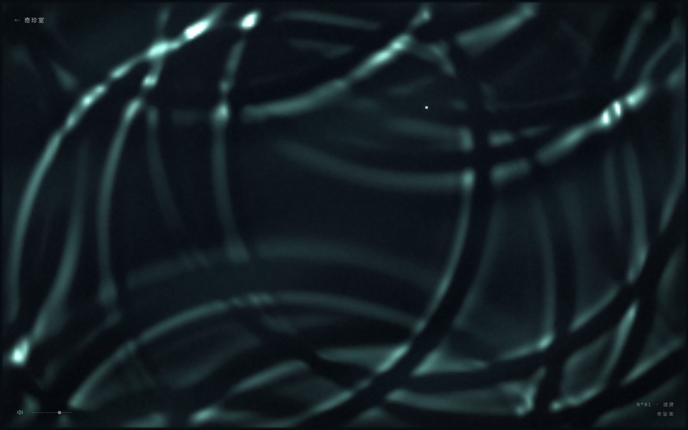
一片没有边界的水面。点击是投石，涟漪会相遇、干涉、衰减。
移动鼠标拂动水面，点击投石；左下角可开启声音。
二维波动方程数值解 · ImageData 逐像素折射着色 · WebAudio 泛音合成
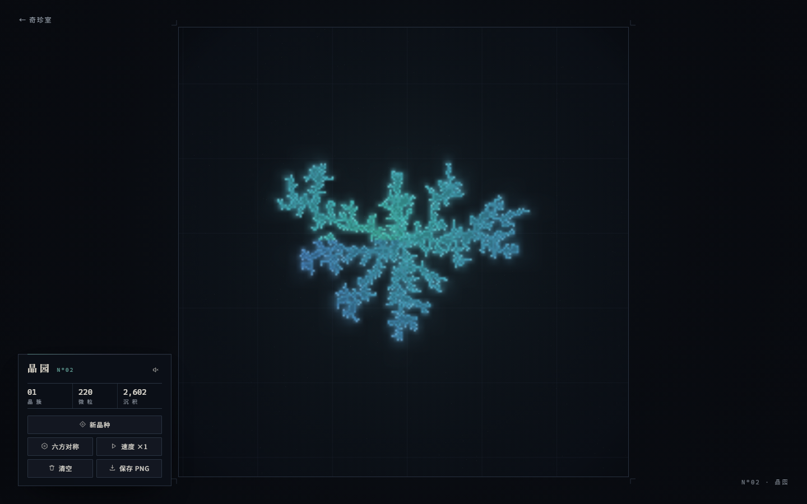
一杯过饱和溶液。点一下，种下晶核，晶体以扩散限制聚集的方式缓慢生长。
点击溶液任意处种晶核；可切换六方对称、加速、清空与导出。
DLA 随机游走 · 极角色相映射 · 自动取景
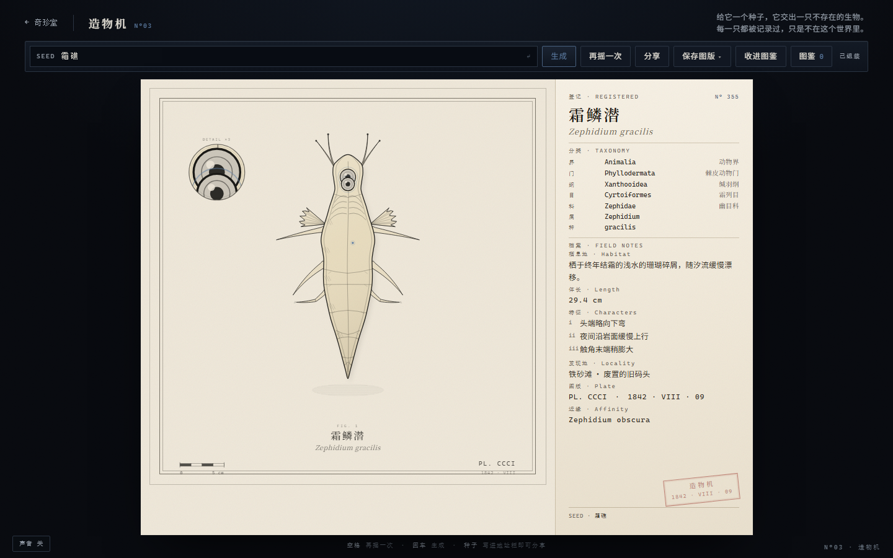
输入任何文字作种子，它吐出一只不存在的生物的博物学图版。
输入种子后回车，或按空格再摇一次；可分享链接、导出图版、收进图鉴。
mulberry32 种子化 PRNG · 参数化 SVG 生物 · 程序化命名
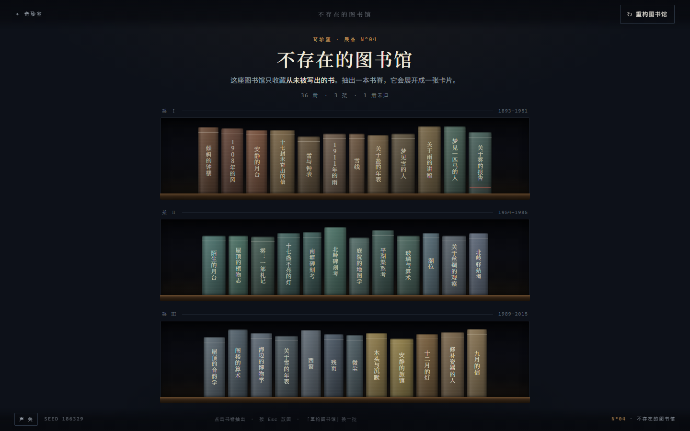
一座只收藏"从未被写出的书"的图书馆。每一本都有借阅卡。
点击书脊抽出一本，Esc 收回；「重构图书馆」换一批。
种子化中文语料与句式模板 · CSS 书脊透视 · 借阅记录生成
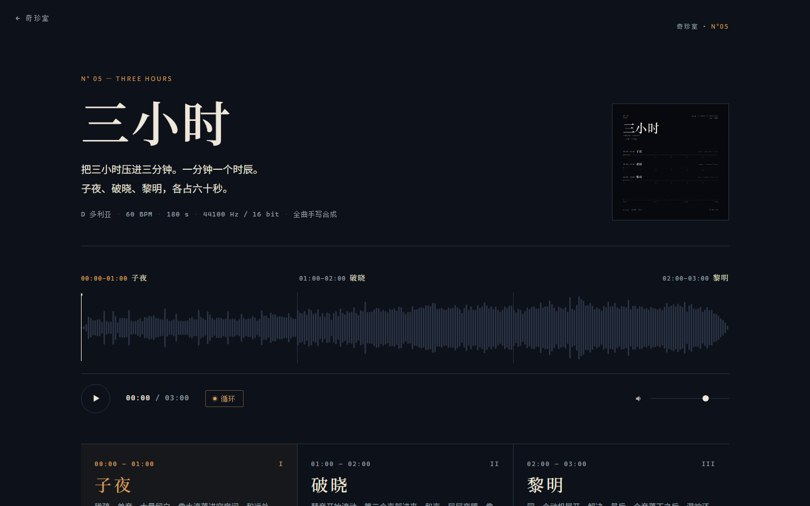
把三小时压进三分钟，一分钟一个时辰：子夜、破晓、黎明。
点击播放，建议戴耳机；可循环、可拖动进度。
numpy 手写加法合成 / Karplus-Strong / Schroeder 混响 · 44.1kHz WAV · MIDI
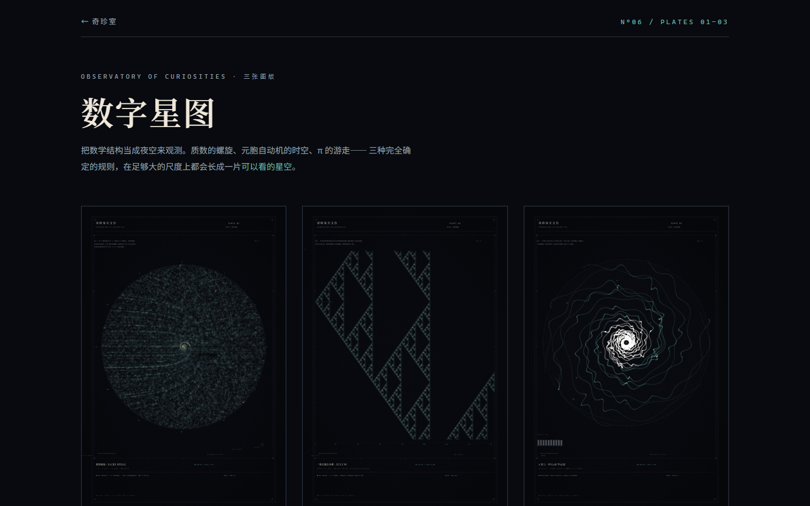
用质数螺旋、元胞自动机与圆周率，观测三个不存在的夜空。
在画廊中点开任一幅，观看细节。
Python + numpy + Pillow · 高分辨率超采样 · 固定随机种子
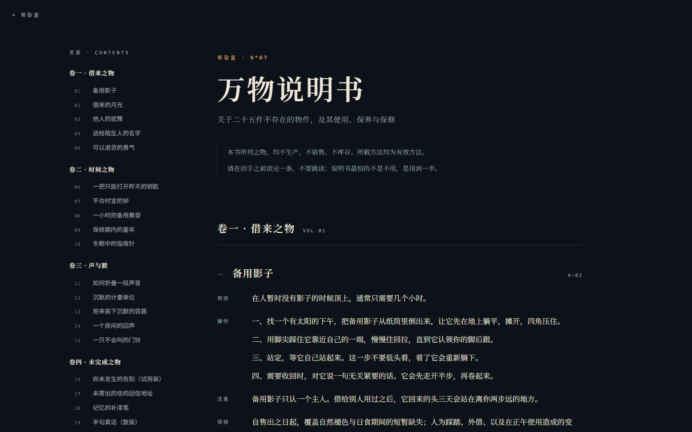
二十五件不存在之物的使用、保养与保修条款。
按左侧目录跳转；最后一条是给读者本人的。
原创文本 · Python 生成 DOCX · 排印式 HTML 阅读页
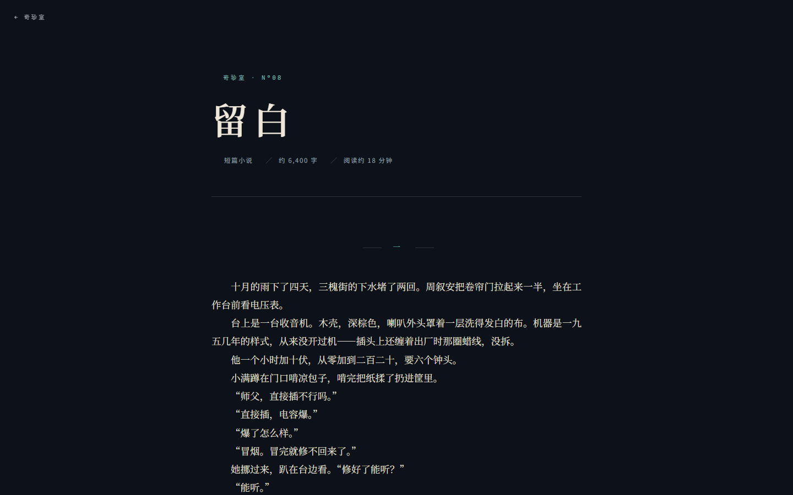
一篇关于"没做完的东西"的小说：一家只修未用之物的铺子。
直接阅读，约六千四百字，十八分钟。
原创小说 · 首行缩进 2 字符 · 行高 1.9 的书页排版
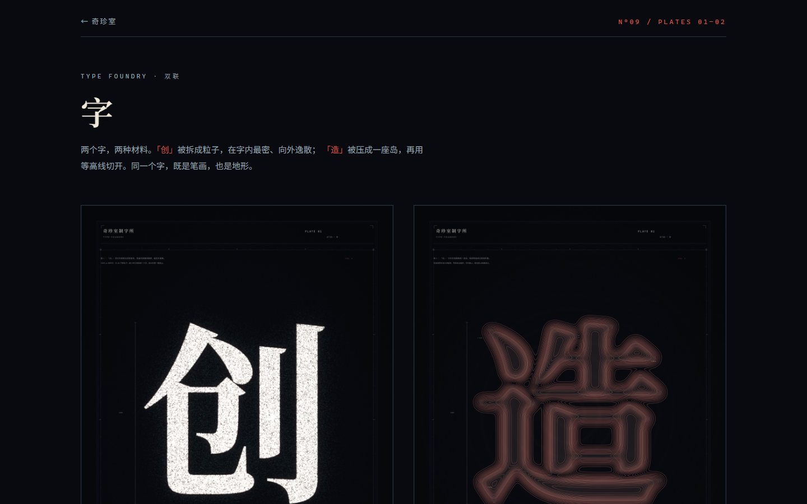
两个汉字被当作两种材料：一颗是星尘，一枚是等高线。
在画廊中点开观看细节。
字形蒙版 · 粒子密度场 / 距离场等值线 · Pillow + numpy
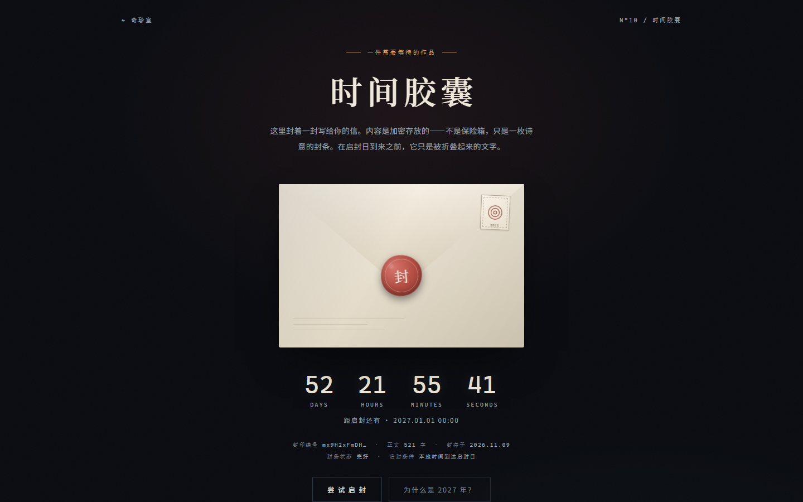
一封封存至 2027 年 1 月 1 日的信。在此之前，它只是被折叠的文字。
等待；或点击「尝试启封」，看它拒绝你。
日期派生密钥流异或 · 到达日期自动启封 · 逐字显示
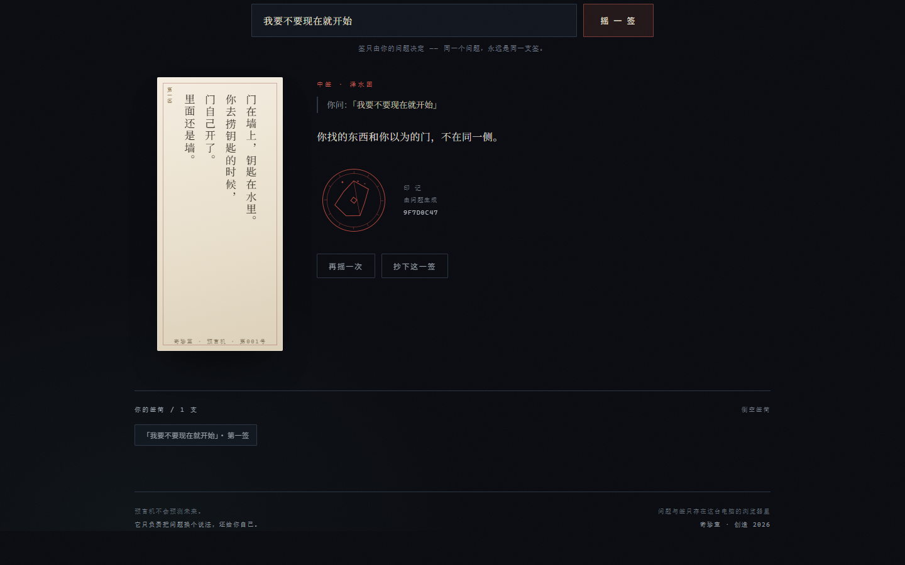
写下你想问的一件事，摇一支签。它不回答你，只把问题翻译成另一种说法。
写下问题后回车，或点击签筒随机抽一支；签会收进本机签筒。
FNV-1a + mulberry32 确定性映射 · 24 支手写签 · Canvas 印记 · 竖排签条
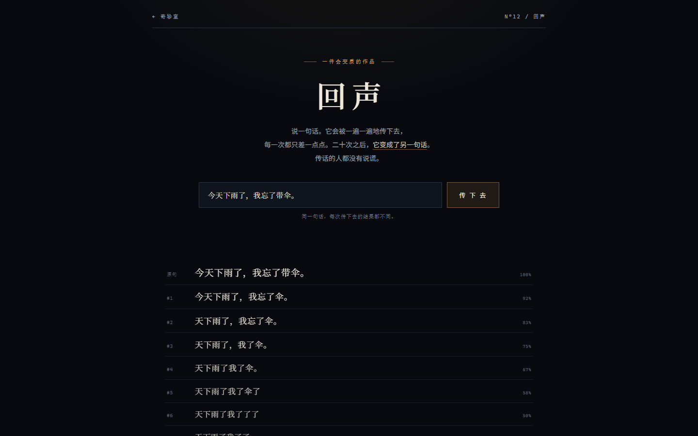
一句话被一遍遍传下去。每次只差一点，二十次之后它成了另一句话。
写下一句话，回车；看它在二十次转述里逐渐变质。
字符级衰减模型（漏字 / 换位 / 同句替换 / 虚词混入）· 编辑距离与相似度 · 种子化随机
十二件展品，分别用原生 HTML / CSS / JavaScript、Canvas、WebAudio，以及 Python 的 numpy 与 Pillow 完成。图形是算出来的，声音是合成出来的，文字是写出来的。没有框架，没有构建步骤，没有外部依赖。
每件作品都可以被拆开：代码没有压缩，生成脚本带注释，随机种子写在文件里。欢迎改参数、重跑、据为己有。